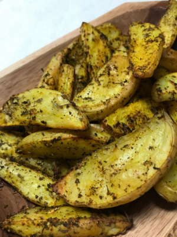
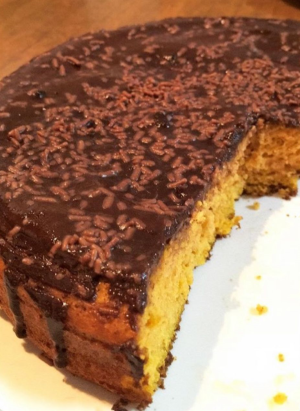
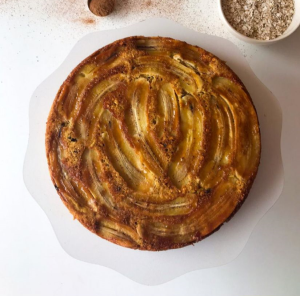
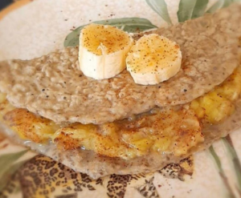

BATATA RÚSTICA

Ingredientes
5 batatas
1 colher (sopa) de azeite de oliva
Sal e temperos a gosto
Modo de Preparo
Lave as batatas, corte no meio e em fatias, tempere com azeite de oliva, sal e temperos e leve ao forno ou airfryer por cerca de 25 minutos a 200°C
BOLO DE CENOURA

Ingredientes
3 ovos
2 Cenouras grandes ou 3 pequenas
1 xicara de açúcar mascavo ou demerara
2 e ½ (meia) xicara de aveia sem glúten (200g)
½ (meia) xicara de óleo de coco (100mL)
1 colher (chá) de fermento
Modo de Preparo
Descasque e pique as cenouras, coloque no liquidificador e acrescente os ovos, o açúcar e o óleo, bata bem.
Acrescente a aveia e bata novamente, coloque o fermento e misture.
Coloque em uma forma untada e leve ao forno em 250°C por aproximadamente 30 minutos.
BOLO DE BANANA INVERTIDO

Ingredientes
9 bananas
5 ovos
3 xicaras de farinha de aveia
1 colher (sopa) de fermento
Modo de Preparo
Em um recipiente amasse 5 bananas, adicione os ovos, a aveia e o fermento e mexa bem.
Unte uma forma média, polvilhe o açúcar, corte as 4 bananas em 3 fatias e distribua sobre o açúcar,
despeje a massa e leve ao forno por cerca de 30 minutos em 220°C.
PANQUECA DE BANANA

Ingredientes
1 banana
1 ovo
2 colheres (sopa) farelo de aveia sem glúten
Modo de Preparo
Amasse a banana, coloque os demais ingredientes e mexa até ficar uma massa homogênea.
Leve ao fogo baixo em uma frigideira antiaderente ou untada e vire dos dois lados até assar.